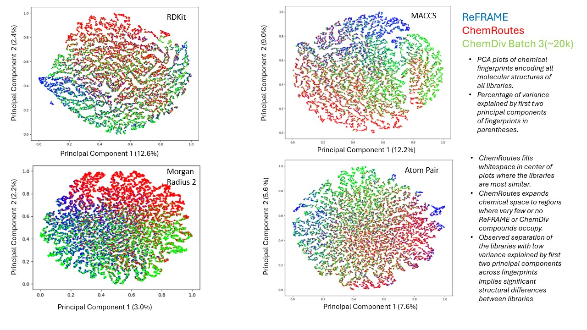

Overview
The chemical diversity and known safety profiles of drugs already tested in humans makes them a valuable set of compounds to explore potential therapeutic utility in indications outside those originally targeted. This practice of “drug repurposing” has become commonplace in academic and other non-profit drug discovery efforts, with the appeal that significantly less time and resources are required to advance a candidate into the clinic. This is especially the case in phenotypic and other cell-based screens in which this collection is being screened against a large number of known and novel targets in parallel.
Here we report a comprehensive open-access, drug repositioning screening set of 13,288 compounds (termed ReFRAME) that was assembled by combining three widely-used commercial drug competitive intelligence databases (Clarivate Integrity, GVK Excelra GoStar, and Citeline Pharmaprojects), together with extensive patent mining of small molecules that have been dosed in humans. To date ~13,288 compounds (~80% of compounds identified from data mining) have been purchased or synthesized, and subsequently plated for screening.
Chemical diversity

Citing REFRAME
Janes J, Young ME, Chen E, Rogers NH, Burgstaller-Muehlbacher S, Hughes LD, Love MS, Hull MV, Kuhen KL, Woods AK, Joseph SB, Petrassi HM, McNamara CW, Tremblay MS, Su AI, Schultz PG, Chatterjee AK. The ReFRAME library as a comprehensive drug repurposing library and its application to the treatment of cryptosporidiosis. Proc Natl Acad Sci U S A. 2018;115(42):10750–10755. doi:10.1073/pnas.1810137115